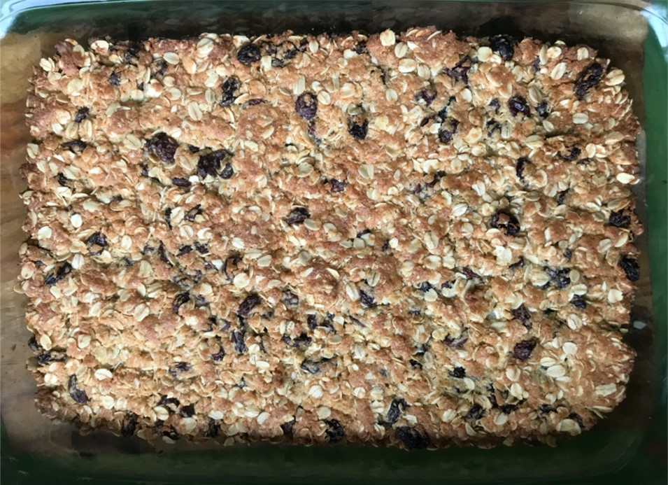
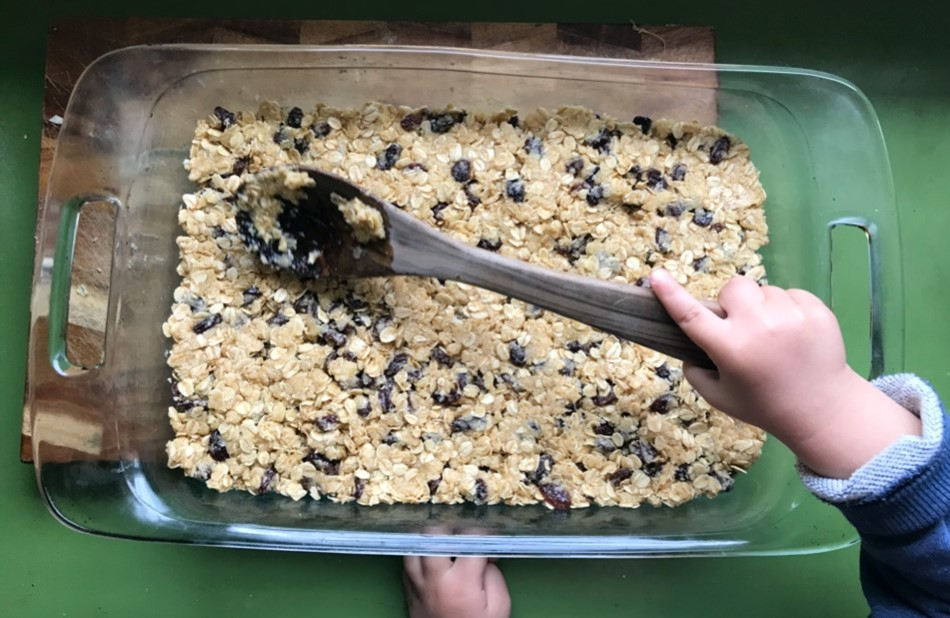

Honey Oat Bars

Prep time 5 mins (longer if you let your kids help), cooking time 15-20 mins.
Submitted by: Leela Frankcombe
Background
Great for people who don’t think they can bake. Or for kids, who think they can bake but often can’t. These are known in my family as Gloomy biscuits (long story, involving a long ago mix up between salt and sugar). I loved them as a kid and now my kids love them.
Ingredients
- 1 cup rolled oats
- 1 cup sultanas
- ½ cup self-raising flour (wholemeal if you have it, otherwise white works
fine)
- ½ cup raw sugar (brown sugar also works)
- ½ cup dessicated coconut
- 140 g butter
- 1 tablespoon honey
Instruction
- Preheat oven to 180 degrees C.
- Combine oats, sultanas, flour, sugar and coconut.
- Melt butter and honey over a low heat.
- Add melted butter mixture to dry ingredients and mix.
- Press into a baking tray. Mixture should be 1.5-2 cm thick. Double portion pictured.

- Bake for 15-20 minutes until golden brown.
- Allow to cool completely before cutting into squares. If you skip this step it will crumble everywhere. You have been warned.